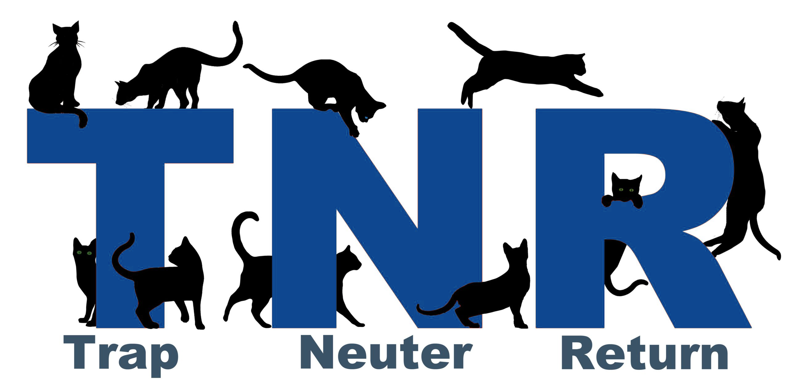

PetEco
About
Solution
Our Mission
PetEco
About
Solution
Our Mission
Trap-Neuter-Return (TNR), the humane approach to addressing community cat populations, works. It saves cats’ lives and is effective. TNR improves the lives of cats, addresses community concerns, reduces complaints about cats, and stops the breeding cycle. TNR improves the co-existence between outdoor cats and humans in our shared environment. This is why so many cities are adopting it. Scientific studies and communities with TNR programs are proof that TNR reduces and stabilizes populations of community cats.
In a Trap-Neuter-Return program, community cats are humanely trapped (with box traps), brought to a veterinarian to be spayed or neutered, vaccinated, eartipped (the universal sign that a community cat has been neutered and vaccinated), and then returned to their outdoor home.
For more than a century, the American shelter and animal control system has been relying on catching and killing outdoor cats to control their population. This approach continues to fail, and the number of outdoor cats increases despite the fact that millions of vibrant, healthy outdoor cats are killed each year. Taxpayer money that funds shelters and animal control agencies is wasted on an endless cycle of trapping and killing. Increasingly, the public believes that the money spent on killing could and should be re-allocated to programs that help animals.
With catch and kill policies, vaccinated and neutered cats are removed from an area. But that only creates a vacuum in the environment, where new cats move in to take advantage of available resources. The new cats breed and the cat population grows. Catch and kill policies aren’t just cruel and ineffective, they go against what the public really wants: humane approaches to cats.
TNR balances the needs and concerns of the human communities in which many feral cats live. People don’t want cats rounded up and killed. They want to see cat populations stabilized and appreciate when the mating behaviors of cats are brought into check through spaying and neutering. With TNR, adult catsspayed or neutered, vaccinated, and eartippedare returned to the colony to live out their lives in their outdoor home.